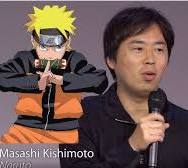

Masashi Kishimoto (岸本 斉史, Kishimoto Masashi; born November 8, 1974[1]) is a Japanese manga artist. His manga series, Naruto, which was in serialization from 1999 to 2014, has sold over 250 million copies worldwide in 46 countries as of May 2019.[2][3] The series has been adapted into two anime and multiple films, video games, and related media. Besides the Naruto manga, Kishimoto also personally supervised the two anime films, The Last: Naruto the Movie and Boruto: Naruto the Movie, and has written several one-shot stories. In 2019, Kishimoto wrote Samurai 8: The Tale of Hachimaru which ended in March 2020. From May 2016 through October 2020 he supervised the Boruto: Naruto Next Generations manga written by Ukyō Kodachi and illustrated by Mikio Ikemoto. In November 2020 it was announced that he had taken over as writer on the series, replacing Kodachi.[4
